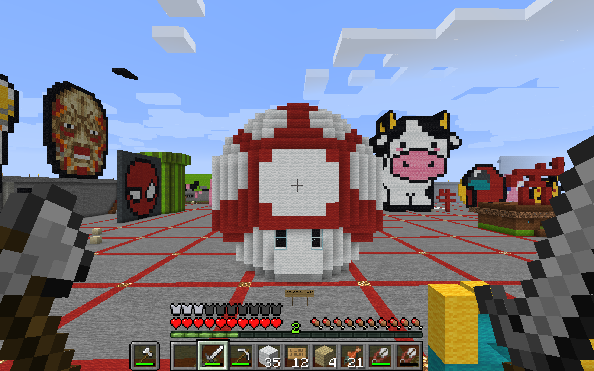
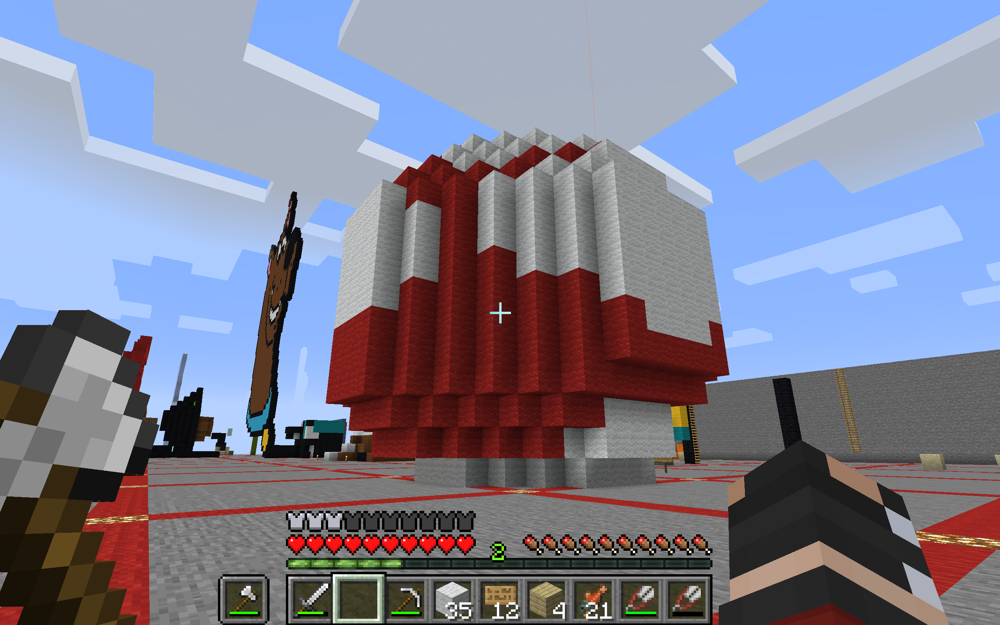
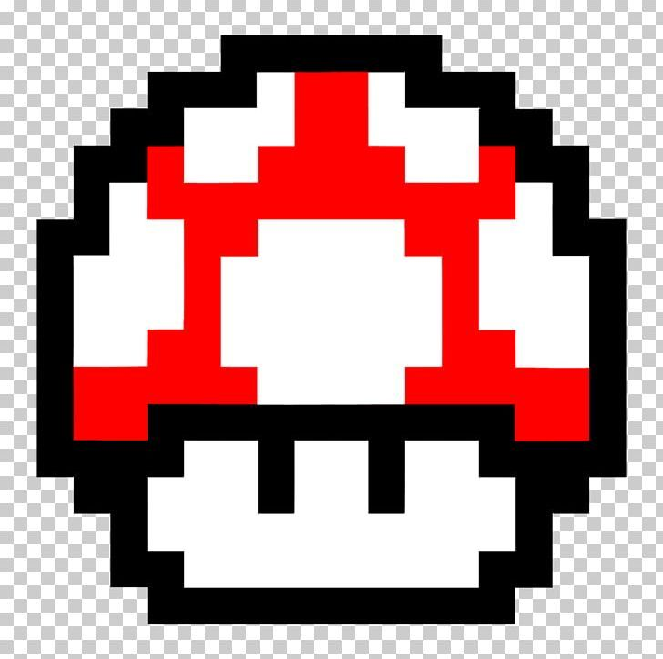
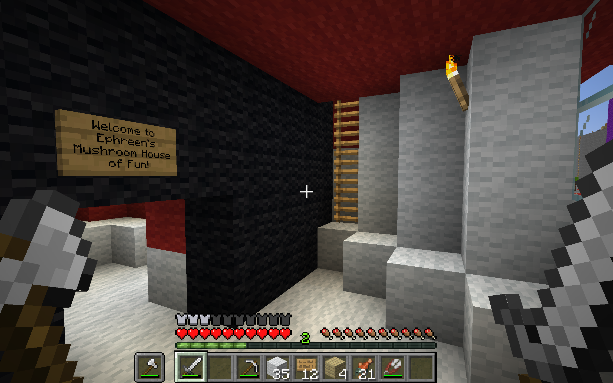

This is the structure I made in Minecraft, it's a magic mushroom from the Mario games. It's cultural because video games- especially Mario games- are very well-known and popular in society. Many people- myself included- love them and have formed communities AKA fanbases around them.


Here's the base/reference image I used. I did want it to look more like the pixelated/16-bit version of the mushroom. But I did also want to embellish it, so I made it 3D.

I also made a fun little home inside it when I was done the actual structure. Nothing fancy but it's kinda fun and cozy.